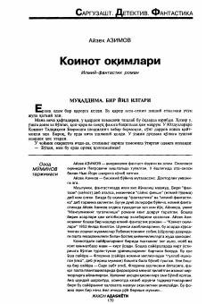

KOFlorina sayyorasining halokati haqida ogohlantiruvchi ilmiy-fantastik roman.
Atoqli fantast-yozuvchi Ayzek Azimovning ushbu romanida butun boshli sayyora va uning aholisi boshiga keladigan xavf-xatar haqida hikoya qilinadi. Florina sayyorasi aholisi qimmatbaho paxta yetishtirishga majbur qilingan bo'lib, tadqiqotchi ularning halokatga uchrashini aniqlaydi. Asar ijtimoiy muammolar va fojiqli voqealarni o'z ichiga olgan ilmiy-fantastik asardir.